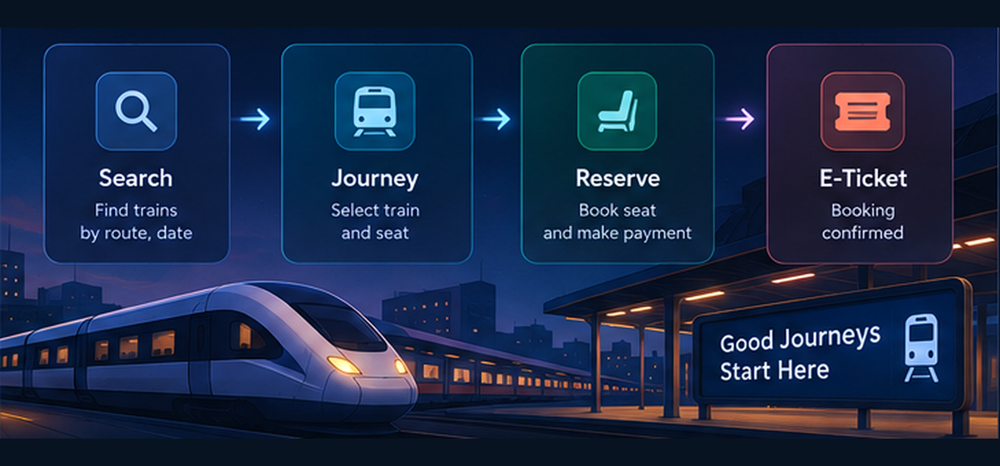
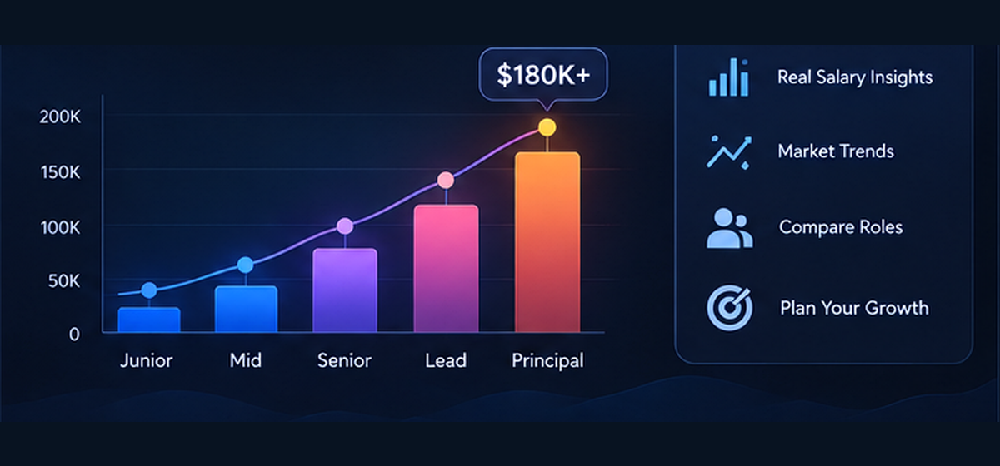
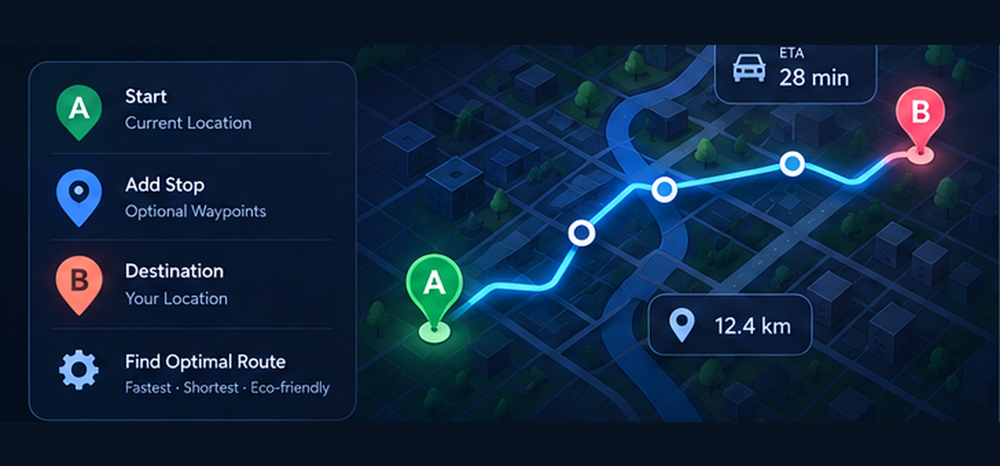
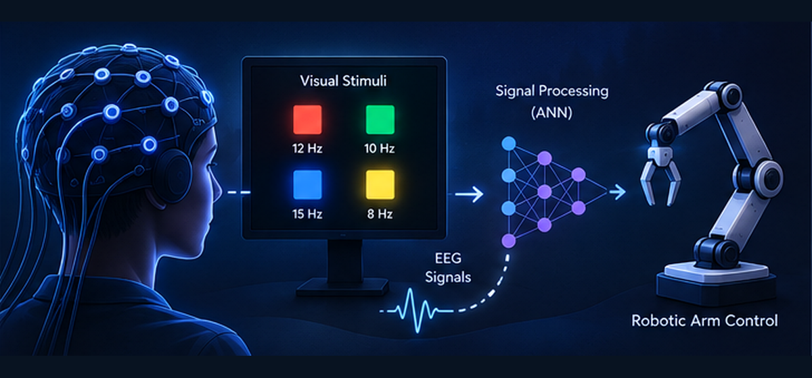

Backend Engineering
C#, .NET, ASP.NET Core, Entity Framework Core, REST APIs, microservices
I'm Shashini Siriwardhana, a software engineer with experience across software development and technical product support. I work with C#/.NET, React, Python, Docker, and cloud technologies, with a growing focus on backend systems, microservices, and cloud-native application development.
About
I'm a software engineer with experience in application development and technical product support, working across .NET, React, Python, cloud technologies, and containerized systems.
My engineering background shapes how I approach software, understand the system, find the root cause, and build practical solutions that are clear, maintainable, and reliable. I'm particularly focused on backend engineering, microservices, and cloud-native development.
C#, .NET, ASP.NET Core, Entity Framework Core, REST APIs, microservices
React, JavaScript, TypeScript, HTML, CSS, Flutter
Azure, PostgreSQL, MySQL, Firebase, Kubernetes, Docker, GitHub, Bitbucket
Grafana, Elasticsearch, ServiceNow, Jira, Postman, Confluence, Technical RCA
Experience
Sitecore
Support SitecoreAI implementations by investigating complex technical issues through reverse engineering and root-cause analysis. Review Next.js and C# application code, analyze logs with Grafana, and Elasticsearch, and use Docker to reproduce and troubleshoot customer environments.
Develop code samples, patches, and workarounds, document technical investigations, and work with engineering and product teams to report defects, track issues, and recommend product improvements.
Future Labs Pvt Ltd
Developed automation tools and application features using Python, Selenium, Firebase, React, Flutter, and Google Apps Script. Led the development of an automated question-uploading workflow that handled grammar and spelling checks, audio processing, and Firebase file uploads.
Created additional Python tools for Firebase data management and reporting, managed the PTE Pro question database, and contributed to both web and mobile application development.
Tranzen Digital Pvt Ltd
Developed a Python script to stream RTSP video feeds from Raspberry Pi cameras for real-time processing and contributed to the development of a React-based web application.
VeroxLabs Pvt Ltd
Developed a Python-based testing application to validate membrane keypad connections and generate detailed reports. Also contributed to a USB and battery power solution for the TMP1000 thermometer.
Sri Lanka Telecom PLC · Headquarters
Supported FTTH projects through testing, quality assurance, and technical troubleshooting. Performed system quality checks using ISDP and EPMS and coordinated with customers and vendors on technical requirements.
Selected work
A selection of projects that reflect my experience with backend development, microservices, cloud-native applications, frontend development, and applied engineering.
An online shopping platform I am building as a set of ASP.NET Core microservices. The project brings together product management, identity and authentication, persistence, testing, containerized development, and asynchronous messaging to explore practical distributed-system design.

Built a microservices-based train ticket reservation and management system with ASP.NET Core, Entity Framework Core, and REST APIs, then deployed the application using Azure App Service and Azure SQL Database.

A cloud-native platform for exploring technology salary data, built with a React frontend and FastAPI-based services. PostgreSQL provides persistent storage, while Docker and Kubernetes support containerized deployment with ingress routing, secrets, persistent volumes, and health checks for an Azure Kubernetes Service environment.

A route-planning web application that lets users create custom Google Maps routes using start points, destinations, and intermediate waypoints. Built with React, Node.js, and Redux.

Developed an SSVEP-based brain-computer interface that used machine learning and neural networks to control a robotic arm, supported by a MATLAB App Designer desktop interface.
Education
University of Westminster, UK
Currently pursuing · January 2026 — PresentElectrical & Electronic Engineering · University of Peradeniya
November 2017 — March 2023Published at the 2023 IEEE 17th International Conference on Industrial and Information Systems (ICIIS). The related final-year BCI project was also nominated for the W. P. Jayasekara Prize.
Open to software engineering opportunities and collaboration.